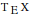

TeX Utilities package provide following functions, that can be used to customize conversion of expressions to
![TAdjustmentBox[E, BoxBaselineShift -> 0.5, BoxMargins -> {{-0.3, 0}, {0, 0}}]X](Files/TeXUtilities/Image_1.gif "TAdjustmentBox[E, BoxBaselineShift -> 0.5, BoxMargins -> {{-0.3, 0}, {0, 0}}]X")
.
TeXVerbatim — converted to
![TAdjustmentBox[E, BoxBaselineShift -> 0.5, BoxMargins -> {{-0.3, 0}, {0, 0}}]X](Files/TeXUtilities/Image_2.gif "TAdjustmentBox[E, BoxBaselineShift -> 0.5, BoxMargins -> {{-0.3, 0}, {0, 0}}]X")
returns its argument verbatim
TeXDelimited — converted to
![TAdjustmentBox[E, BoxBaselineShift -> 0.5, BoxMargins -> {{-0.3, 0}, {0, 0}}]X](Files/TeXUtilities/Image_3.gif "TAdjustmentBox[E, BoxBaselineShift -> 0.5, BoxMargins -> {{-0.3, 0}, {0, 0}}]X")
returns delimited environment with body converted to
![TAdjustmentBox[E, BoxBaselineShift -> 0.5, BoxMargins -> {{-0.3, 0}, {0, 0}}]X](Files/TeXUtilities/Image_4.gif "TAdjustmentBox[E, BoxBaselineShift -> 0.5, BoxMargins -> {{-0.3, 0}, {0, 0}}]X")
TeXCommand — converted to
![TAdjustmentBox[E, BoxBaselineShift -> 0.5, BoxMargins -> {{-0.3, 0}, {0, 0}}]X](Files/TeXUtilities/Image_5.gif "TAdjustmentBox[E, BoxBaselineShift -> 0.5, BoxMargins -> {{-0.3, 0}, {0, 0}}]X")
returns
![TAdjustmentBox[E, BoxBaselineShift -> 0.5, BoxMargins -> {{-0.3, 0}, {0, 0}}]X](Files/TeXUtilities/Image_6.gif "TAdjustmentBox[E, BoxBaselineShift -> 0.5, BoxMargins -> {{-0.3, 0}, {0, 0}}]X")
command possibly with arguments
TeXEnvironment — converted to
![TAdjustmentBox[E, BoxBaselineShift -> 0.5, BoxMargins -> {{-0.3, 0}, {0, 0}}]X](Files/TeXUtilities/Image_7.gif "TAdjustmentBox[E, BoxBaselineShift -> 0.5, BoxMargins -> {{-0.3, 0}, {0, 0}}]X")
returns environment with body converted to
